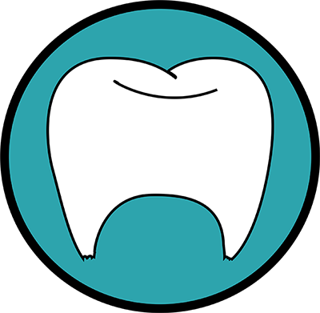

<!--
  Generated template for the ShowTreatmentPage page.

  See http://ionicframework.com/docs/components/#navigation for more info on
  Ionic pages and navigation.
-->
<ion-header>

  <ion-navbar>
    <ion-title dir="rtl">הצגת טיפול</ion-title>
  </ion-navbar>

</ion-header>


<ion-content padding>
  <ion-row class="logo-row">
    <ion-col></ion-col>
    <ion-col width-67>
          </ion-col>
    <ion-col></ion-col>
  </ion-row>
<div align="center">
  <form align-self-start="center">
    <h1>סיבת הטיפול</h1>
    <ion-item align="center">

    <ion-input  name="סיבת הטיפול" [(ngModel)]="curretnTreatment.reasonOfTreatment" [disabled] = true></ion-input>
  </ion-item>
    <h1>סיכום הטיפול</h1>
    <ion-item dir="rtl">

      <textarea rows="10" cols="60"  name="סיכום הטיפול" [(ngModel)]="curretnTreatment.anamnesis" [disabled] = true></textarea>
    </ion-item>
    <p dir="rtl">
      <button (click)="startPlayback()" class="buttton-start-playback" [disabled]="audioRecorder.state != AudioRecorderState.Recorded">
        <ion-icon name="play" align-self-start="flex-start"></ion-icon>
        תשמיע טיפול
      </button>
    </p>
    <p>
      <button (click)="stopPlayback()" class="buttton-stop-playback" [disabled]="audioRecorder.state != AudioRecorderState.Playing">
        <ion-icon name="square"></ion-icon>
        עצור שמיעת טיפול
      </button>
    </p>

</form>
</div>
</ion-content>
